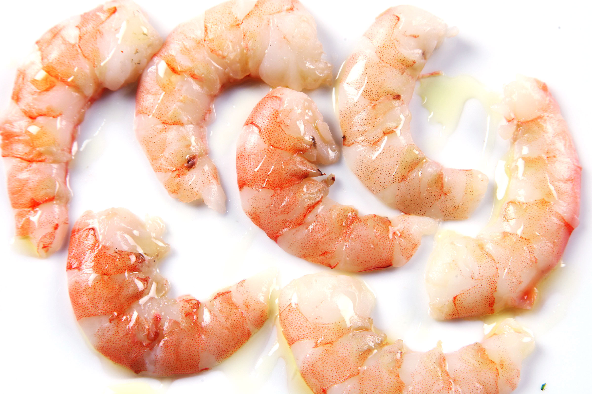
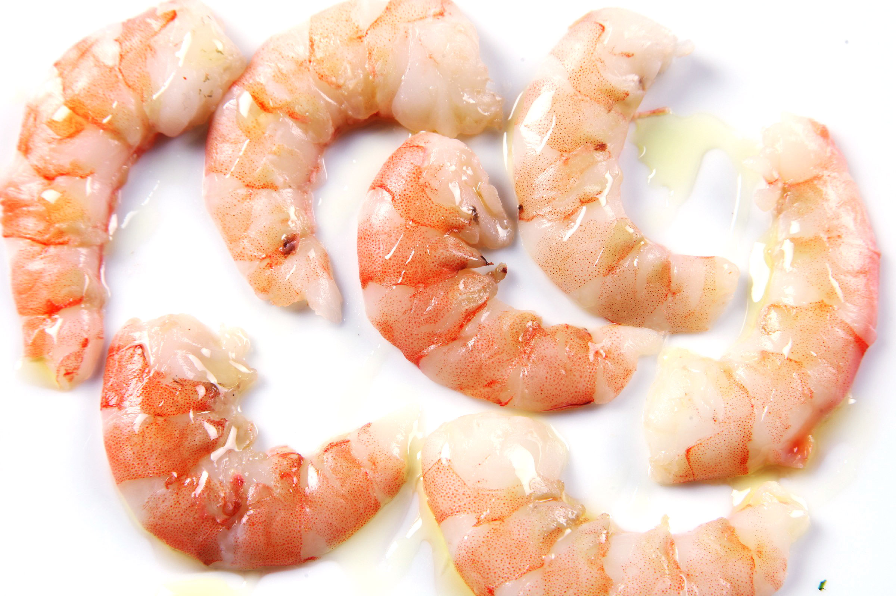
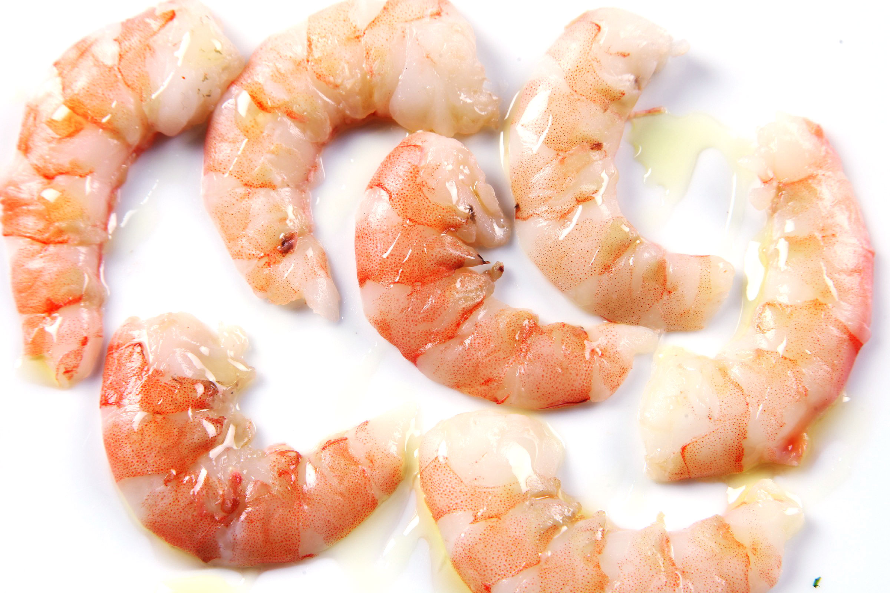

Brad's Recipe Blog
Shrimp Scampi
Description
Shrimp scampi is a simple dish that even people who don't like seafood will like. It has minimal ingredients, but provides a strong amount of flavor. It is very easy to make. Which means it is perfect for anyone.
Ingredients



 

- Butter
- Fresh Garlic
- Pepper
- Rice
- Fresh Shrimp
Directions
Choose the amounts of ingredients to your own liking. It is pretty hard to mess up. Start out by making the rice because it takes a while. After a few minutes throw some butter into a pan and heat it up. Throw chopped up garlic into the pan. Season with pepper. Once everything is done cooking throw it into a bowl and mix it up spreading out the flavor into the rice and enjoy.
Comment Section